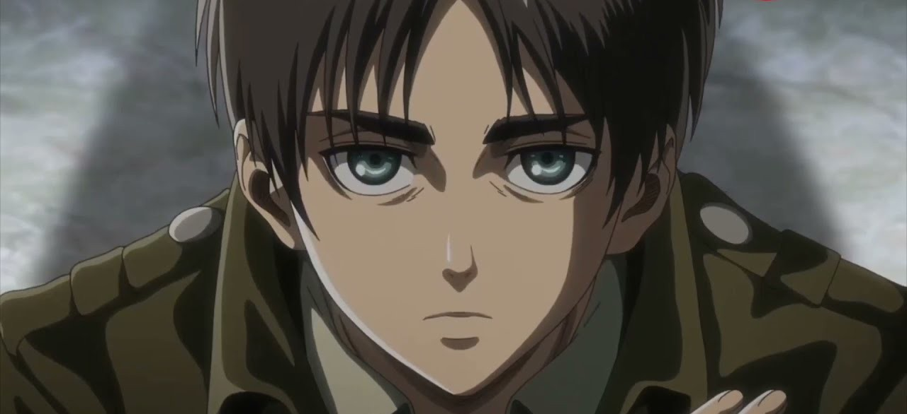
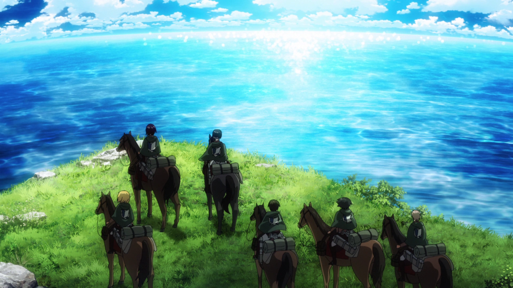

Politik di Balik Tembok: Intrik dan Kekuasaan dalam Dunia Attack on Titan
Fakhri Zaidi Djulistiawan - 29 Oct 2025
Attack on Titan adalah serial yang diciptakan oleh Hajime Isayama, berlatar di dunia di mana umat manusia hidup di dalam tembok raksasa untuk melindungi diri dari makhluk humanoid pemakan manusia yang disebut Titan. Selama lebih dari seratus tahun, manusia percaya bahwa dunia luar telah musnah, dan hanya kehidupan di balik temboklah yang aman. Namun, seiring berjalannya waktu, terungkap bahwa ancaman sesungguhnya tidak hanya datang dari para Titan, tetapi juga dari manusia itu sendiri, dari sistem politik yang menindas, kebohongan besar yang disembunyikan oleh pemerintah, hingga konflik ideologi yang memecah dunia.
Tokoh utama, Eren Yeager, awalnya hanyalah pemuda yang bermimpi membebaskan umat manusia dari para Titan setelah menyaksikan kehancuran kampung halamannya. Tetapi perjalanan panjang dan penemuan mengejutkan tentang asal-usul Titan, dunia luar, serta sejarah bangsanya mengubah pandangannya terhadap kebebasan dan musuh yang sebenarnya.
Dunia yang Hidup dalam Kebohongan
Kisah ini memperlihatkan bagaimana kekuasaan bisa menciptakan ilusi besar demi menjaga stabilitas. Selama berabad-abad, rakyat di dalam tembok hidup tanpa mengetahui kebenaran tentang dunia luar maupun sejarah umat manusia. Pemerintah menutupi fakta bahwa Titan pada dasarnya adalah manusia yang berubah bentuk akibat kekuatan misterius. Semua ini dilakukan untuk mencegah kekacauan dan mempertahankan kontrol politik atas rakyat.
Ketakutan Sebagai Alat Kekuasaan
Ketakutan menjadi senjata paling efektif dalam mempertahankan kekuasaan. Pemerintah menyebarkan keyakinan bahwa dunia di luar tembok hanya berisi Titan buas, menciptakan rasa aman palsu di dalam wilayah tertutup. Dengan cara itu, rakyat terus bergantung pada sistem dan pemimpinnya. Ketakutan kolektif ini membentuk masyarakat yang patuh, di mana kebenaran dikorbankan demi rasa aman.
Kebenaran Terungkap dan Pergeseran Kekuasaan
Segalanya berubah ketika rahasia besar akhirnya terbongkar. Melalui perjuangan Survey Corps, rakyat mengetahui bahwa dunia luar masih dihuni manusia lain, bahkan mereka, bangsa Eldia, dianggap sebagai iblis oleh kekaisaran di luar tembok, Marley. Pengungkapan ini memicu pergolakan besar dalam sistem politik Paradis. Kudeta militer pun terjadi, menggulingkan pemerintahan palsu yang selama ini bersembunyi di balik simbol kerajaan. Rakyat mulai sadar bahwa ancaman terbesar bukan hanya para Titan, tapi juga kebohongan yang diwariskan oleh generasi penguasa sebelumnya.
Eren Yeager dan Politik Kebebasan
Eren Yeager menjadi simbol revolusi yang mengguncang dunia. Awalnya digambarkan sebagai pahlawan yang ingin menghancurkan semua Titan, Eren kemudian berkembang menjadi sosok yang menolak tunduk pada kekuatan mana pun. Pandangannya berubah dari perjuangan lokal menjadi ideologi global: membebaskan bangsanya, meski harus menghancurkan dunia luar dengan Rumbling, bencana di mana ribuan Titan raksasa menghancurkan segalanya. Tindakan Eren menciptakan dilema moral mendalam: apakah kebebasan masih berarti jika diperoleh dengan meniadakan kebebasan pihak lain?
Tidak Ada Pahlawan Mutlak
Attack on Titan menghadirkan politik yang kelam dan realistis, tidak ada tokoh yang sepenuhnya benar atau salah. Setiap karakter memiliki pandangan dan kepentingannya sendiri. Levi berjuang demi tanggung jawab moral, Hange mencari kebenaran ilmiah, sementara Eren memilih jalan ekstrem untuk membebaskan bangsanya. Isayama menggambarkan dunia yang tidak hitam putih: politik adalah area abu-abu di mana keputusan sulit harus diambil dengan konsekuensi yang berat.
Dunia di Balik Tembok: Cermin Kemanusiaan
Kisah Attack on Titan adalah alegori tentang politik, kebebasan, dan siklus kebencian yang diwariskan dari generasi ke generasi. Baik bangsa Paradis maupun Marley sama-sama korban dari sejarah panjang manipulasi dan balas dendam. Pada akhirnya, cerita ini menunjukkan bahwa musuh sejati manusia bukanlah raksasa, melainkan sistem dan ketakutan yang mereka ciptakan sendiri.
“If you want freedom, you must fight for it. even if it means waging war on the whole world.” — Eren Yeager